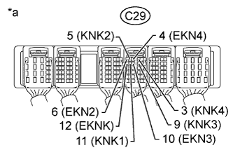

DTC P0327 Knock Sensor 1 Circuit Low Input (Bank 1 or Single Sensor) |
DTC P0328 Knock Sensor 1 Circuit High Input (Bank 1 or Single Sensor) |
DTC P032C Knock Sensor 3 Circuit Low |
DTC P032D Knock Sensor 3 Circuit High |
DTC P0332 Knock Sensor 2 Circuit Low Input (Bank 2) |
DTC P0333 Knock Sensor 2 Circuit High Input (Bank 2) |
DTC P033C Knock Sensor 4 Circuit Low Input |
DTC P033D Knock Sensor 4 Circuit High Input |
| DTC No. | DTC Detection Condition | Trouble Area |
| P0327 | Output voltage of the knock sensor (for Bank 1 Sensor 1) is 0.5 V or less (1 trip detection logic). |
|
| P0328 | Output voltage of the knock sensor (for Bank 1 Sensor 1) is 4.5 V or higher (1 trip detection logic). |
|
| P0332 | Output voltage of the knock sensor (for Bank 2 Sensor 1) is 0.5 V or less (1 trip detection logic). |
|
| P0333 | Output voltage of the knock sensor (for Bank 2 Sensor 1) is 4.5 V or higher (1 trip detection logic). |
|
| P032C | Output voltage of the knock sensor (for Bank 1 Sensor 2) is 0.5 V or less (1 trip detection logic). |
|
| P032D | Output voltage of the knock sensor (for Bank 1 Sensor 2) is 4.5 V or higher (1 trip detection logic). |
|
| P033C | Output voltage of the knock sensor (for Bank 2 Sensor 2) is 0.5 V or less (1 trip detection logic). |
|
| P033D | Output voltage of the knock sensor (for Bank 2 Sensor 2) is 4.5 V or higher (1 trip detection logic). |
|
| Tester Connection | Tool Setting | Condition | Specified Condition |
| C29-11 (KNK1) - C29-12 (EKNK) | 0.01 to 10 V/DIV. 0.01 to 10 msec./DIV. | Engine speed at 4000 rpm with warm engine | The correct waveform is as shown |
| C29-5 (KNK2) - C29-6 (EKN2) | 0.01 to 10 V/DIV. 0.01 to 10 msec./DIV. | Engine speed at 4000 rpm with warm engine | The correct waveform is as shown |
| C29-9 (KNK3) - C29-10 (EKN3) | 0.01 to 10 V/DIV. 0.01 to 10 msec./DIV. | Engine speed at 4000 rpm with warm engine | The correct waveform is as shown |
| C29-3 (KNK4) - C29-4 (EKN4) | 0.01 to 10 V/DIV. 0.01 to 10 msec./DIV. | Engine speed at 4000 rpm with warm engine | The correct waveform is as shown |
| Frequency of Operation | Continuous |
| Tester Display | Description |
| NORMAL |
|
| ABNORMAL |
|
| INCOMPLETE |
|
| UNKNOWN |
|
| 1.INSPECT KNOCK SENSOR |
Disconnect the ECM connector.
Measure the resistance according to the value(s) in the table below.
| Tester Connection | Condition | Specified Condition |
| C29-11 (KNK1) - C29-12 (EKNK) | 20°C (68°F) | 120 to 280 kΩ |
| C29-5 (KNK2) - C29-6 (EKN2) | 20°C (68°F) | 120 to 280 kΩ |
| C29-9 (KNK3) - C29-10 (EKN3) | 20°C (68°F) | 120 to 280 kΩ |
| C29-3 (KNK4) - C29-4 (EKN4) | 20°C (68°F) | 120 to 280 kΩ |
| *a | Rear view of wire harness connector (to ECM) |
|
| ||||
| OK | |
| 2.INSPECT ECM |
|  |
Disconnect the Ch1 connector.
Turn the engine switch on (IG).
Measure the voltage according to the value(s) in the table below.
| Tester Connection | Switch Condition | Specified Condition |
| C29-11 (KNK1) - C29-12 (EKNK) | Engine switch on (IG) | 4.5 to 5.5 V |
| C29-5 (KNK2) - C29-6 (EKN2) | Engine switch on (IG) | 4.5 to 5.5 V |
| C29-9 (KNK3) - C29-10 (EKN3) | Engine switch on (IG) | 4.5 to 5.5 V |
| C29-3 (KNK4) - C29-4 (EKN4) | Engine switch on (IG) | 4.5 to 5.5 V |
| *a | Component with harness connected (ECM) |
|
| ||||
| OK | ||
| ||
| 3.CHECK HARNESS AND CONNECTOR (ECM - KNOCK SENSOR) |
Disconnect the ECM connector.
Disconnect the knock sensor connector.
Measure the resistance according to the value(s) in the table below.
| Tester Connection | Condition | Specified Condition |
| h1-2 - C29-11 (KNK1) | Always | Below 1 Ω |
| h1-1 - C29-12 (EKNK) | Always | Below 1 Ω |
| h2-2 - C29-5 (KNK2) | Always | Below 1 Ω |
| h2-1 - C29-6 (EKN2) | Always | Below 1 Ω |
| h3-2 - C29-9 (KNK3) | Always | Below 1 Ω |
| h3-1 - C29-10 (EKN3) | Always | Below 1 Ω |
| h4-2 - C29-3 (KNK4) | Always | Below 1 Ω |
| h4-1 - C29-4 (EKN4) | Always | Below 1 Ω |
| h1-2 or C29-11 (KNK1) - Body ground | Always | 10 kΩ or higher |
| h1-1 or C29-12 (EKNK) - Body ground | Always | 10 kΩ or higher |
| h2-2 or C29-5 (KNK2) - Body ground | Always | 10 kΩ or higher |
| h2-1 or C29-6 (EKN2) - Body ground | Always | 10 kΩ or higher |
| h3-2 or C29-9 (KNK3) - Body ground | Always | 10 kΩ or higher |
| h3-1 or C29-10 (EKN3) - Body ground | Always | 10 kΩ or higher |
| h4-2 or C29-3 (KNK4) - Body ground | Always | 10 kΩ or higher |
| h4-1 or C29-4 (EKN4) - Body ground | Always | 10 kΩ or higher |
|
| ||||
| OK | ||
| ||